Визуализация рельефа и создание 3D моделей местности в ArcGIS
Начальные сведения о 3d - визуализации рельефа в ArcGis 9.х, медленно но верно вытесняющей ArcView 3.x. Нижеприведенные примеры – долина р. Котуй, Анабарское плато, юго-восток Таймырского АО.
В отличие от ArcView 3х, в ArcMap 9 в стандартном пользовательском интерфейсе значительно усовершенствовано построение TIN. Для создания TIN-модели рельефа требуется один или несколько слоев, имеющих в атрибутивной таблице значения абсолютной высоты. В этом примере будут использоваться слой горизонталей (линейный) и слой отметок высот всех типов (точечный).
Загружаем в проект нужные слои. Активизируем модуль 3D Analyst (Tools – Extentions – 3D Analyst (рис. 1).
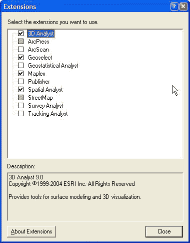
Рис.1. Активизация модуля 3D Analyst
Вызвав контекстное меню щелчком правой кнопки мыши на панели инструментов Arcmap, включаем панель 3D Analyst (рис.2).

Рис.2. Панель инструментов 3 D Analyst
Открываем меню в левой части панели 3D Analyst и выбираем Create/ Modify TIN. Появляется диалоговое окно, в котором слева предлагается выбор слоев, на основе которых может быть построена TIN – модель (рис.3).
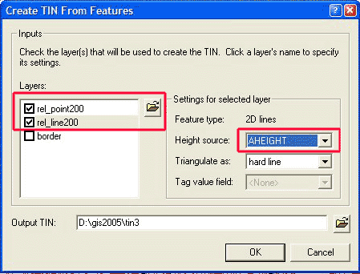
Рис.3. Диалоговое окно создания TIN, слева обведены слои, на основе которых он будет построен, справа – поле, содержащее значения абсолютных высот.
Отмечаем галочкой темы (слои), содержащие информацию о высоте – в нашем случае rel_ point200 и rel_ line200, и для каждой темы справа в списке Height Source выбираем поле в атрибутивной таблице, содержащее значения высот – в нашем случае в обоих темах поле AHEIGHT . Остальные значения указывают путь и имя результирующей TIN-модели. После нажатия ОК – идет построение модели, результат – рис. 4.
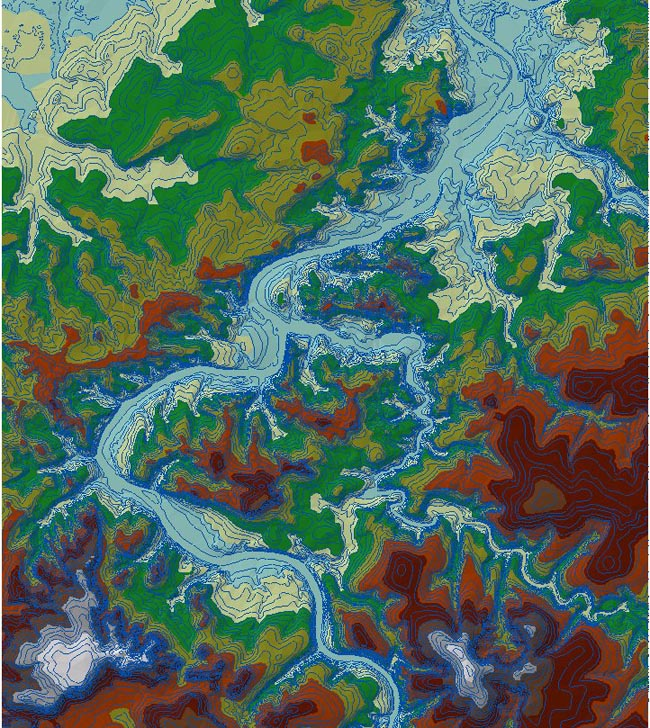
Рис.4. TIN, построенный со значениями «по умолчанию»
Можно отредактировать легенду TIN (двойным щелчком на названии TIN-темы вызвать ее свойства и перейти на вкладку Symbology. Параметр Edge type можно снять, это те же горизонтали, только построенные автоматически по интерполированному TIN в соответствии с заданными интервалами (этот параметр может, однако, пригодиться, если надо построит свой особый слой горизонталей, отличный от исходного). ArcMap представляет широкие возможности для раскраски рельефа (цветовые шкалы, рис.5) и классификации (кнопка Classify, рис 6).
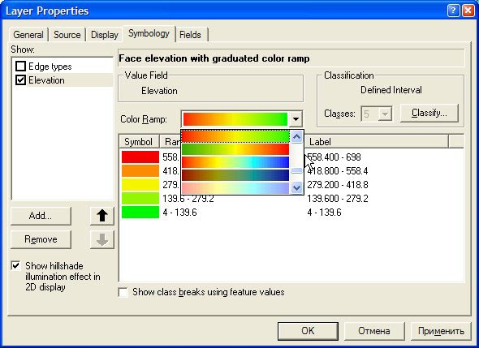
Рис. 5. Выбор цветовых шкал высот
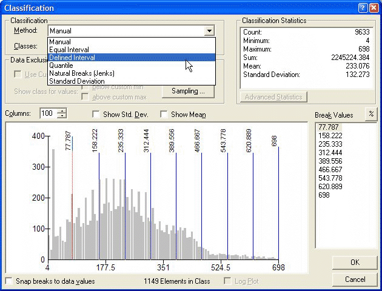
Рис.6. Выбор способов классификации для построения легенды слоя абсолютных высот.
Можно задать любое количество классов и любые интервалы между ними, цветовые шкалы так же можно редактировать (рис.7).
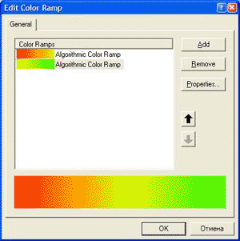
Рис. 7. Окно редактирования цветовой шкалы. Цветовая шкала состоит из одной или нескольких градиентных растяжек. Для редактирования градиентной заливки – необходимо выбрать Properites.
Результат редактирования представлен на рис. 8. Созданную легенду можно сохранить для будущего использования нажав правой кнопкой мыши на названии темы и выбрав – Save As Layer File (Сохранить как файл слоя).
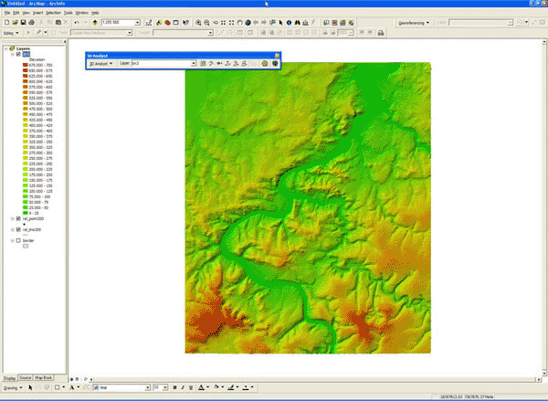
Рис.8. TIN с модифицированной легендой.
В дальнейшем TIN можно модифицировать и уточнять, добавляя новые слои любых типов, имеющие в атрибутике абсолютные высоты.
Далее нужно переконвертировать TIN в GRID (3D Analyst – Convert – TIN to Raster), при этом можно задать размер ячейки GRID (рис.9).
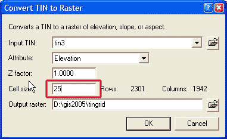
Рис. 9. Окно конвертации TIN в GRID, выделено поле ввода размера ячейки GRID в единицах Вида (в данном случае – 25х25 м).
В полученном GRID надо поменять легенду, тем же способом, что и ранее был описан для TIN, в поле Show: надо сменить Stretched на Classified (рис.10). Все прилагающиеся цветовые легенды шкалы высот сделаны из расчета, что зеленым обозначаются большие значения, а коричневым – меньшие. Чтобы «развернуть» цвета в обратном порядке, щелкаем мышью на столбце с цветами и выбираем Flip Colors.
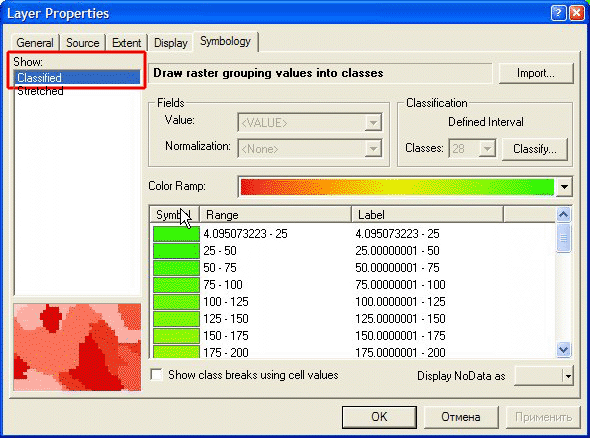
Рис. 10. Окно построения легенды растрового изображения ( GRID).
Дальнейшие операции весьма сходны по сути с описанными для ArcView 3 x. Делаем слой оттенения (3D Analyst- Surface Analysis – Hillshade), в диалоговом оконе задаем направление и высоту солнца, при необходимости меняем Cell Size на идентичные исходному GRID, и обязательно меняем путь и имя Hillshade – растра с Temporary (временный) на любой постоянный путь и название файла (рис. 11).
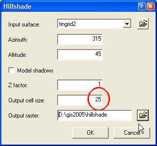
Рис. 11. Окно построения Hillshade GRID. Azimuth – направление освещения солнца (по умолчанию – СЗ, Altitude – угол высоты солнца над горизонтом, чем он ниже, тем «длиннее» будут тени, значение Output cell size должно быть равно ячейке GRID абсолютных высот.
Далее помещаем полученный слой Hillshade под Grid в списке слоев, и задаем слою GRID прозрачность вызвав его свойства (Properties) и закладку Display (рис. 12).
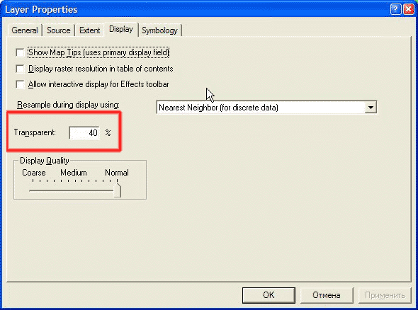
Рис.12. Установка прозрачности слоя GRID.
Все дальнейшие действия – это комбинированию легенд слоев GRID и Hillshade и прозрачности слоя GRID. Возможный результат – на рис.13. В качестве примера можно скачать легенды grid 0-1200.lyr (рассчитана на высоты 0-1300 м) и hillshade .lyr (перед подгрузкой тип легенды Stretched необходимо заменить на Classified)
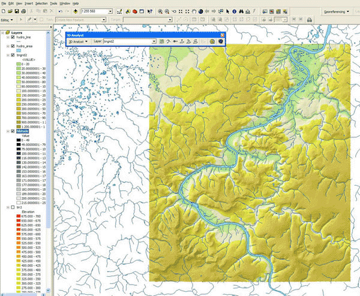
Рис.13. Раскраска и отмывка рельефа с наложением гидросети (пример)
Теперь у нас есть все необходимое для создания трехмерной модели местности. Для этого можно использовать приложение ArcScene, вызываемое с панели инструментов 3D Analyst (рис.14).
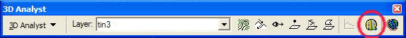
Рис. 14. Кнопка вызова ArcScene на панели инструментов 3 D Analyst.
На рис. 15 – окно ArcScene, сходное с окном ArcMap, в него также можно добавлять любые темы.
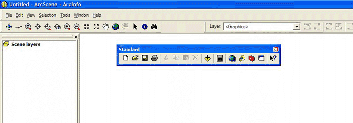
Рис.15. Окно ArcScene
Сначала нужно загрузить собственно слой поверхности – либо полученный ранее TIN, либо GRID, результат будет примерно одинаков . После добавления слоя в проект ArcScene подгружаем ему легенду . lyr, заранее сохраненную в ArcMap. Затем идем в свойства темы, на вкладку Base Heights. Здесь нам надо установить, во первых, базовую поверхность (GRID или TIN), а во вторых – Z-factor – соотношение горизонтального и вертикального масштабов (рис.16).
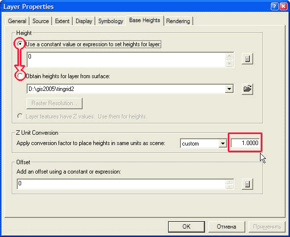
Рис.16. Окно установки 3D-параметров модели. Вверху – установить базовый слой высот, в середине справа – установка соотношения горизонтального и вертикального масштабов ( Z-factor).
Для гористых местностей его надо ставить 3—7, для равнинных 10—20. Получаем следующую картинку – рис.17.
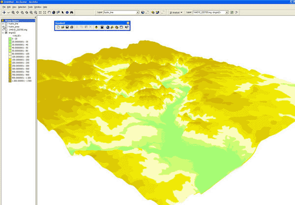
Рис. 17. Трехмерная модель местности на основе слоя GRID без наложения других слоев.
Далее на нее можно накладывать как векторные, так и растровые слои, для которых во вкладке свойств Base Heights устанавливаем ту же поверхность и Z- factor, что и для базового слоя высот. В принципе он (базовый слой высот – TIN или GRID) вообще может и не присутствовать в ТОС ArcScene, а быть только обозначенным во всех слоях. Иногда имеет смысл сделать Z- factor для накладываемых слоев чуть (на 0,5-1) большим, так как векторы могут местами «зарываться» в базовый слой из-за разности визуализации растровых и векторных данных. Например, на трехмерную модель наложена гидросеть (рис. 18).
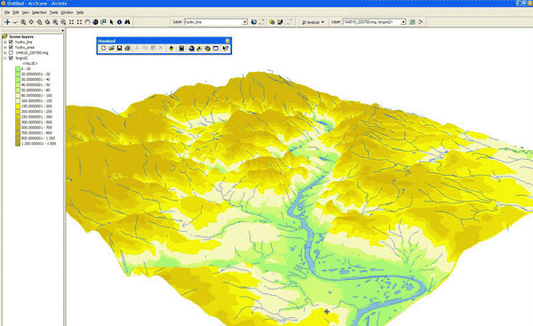
Рис. 18. Трехмерная модель местности на основе слоя GRID с наложением векторных слоев гидросети.
Можно наложить на 3D модель космическую съемку, так же добавив соответствующий растр в ТОС и установив Base Heights и Z- factor. Если у вас достаточно мощная видеокарта, имеет смысл на вкладке свойств растра снимка Rendering выставить Quality Encashment… – High (рис.19), но на слабых картах (менее 64 мб памяти) работа может сильно замедлиться.

Рис. 19. Установка параметров качества растрового изображения, наложенного на трехмерную поверхность.
На рис.20 – снимок ETM + каналы 3-4-5, наложенный на 3- d поверхность. Обведена на рисунке панель, при помощи инструментов которой можно управлять изображением – масштабировать, вращать, менять центр вращения, сдвигать и даже имитировать полет над местностью.
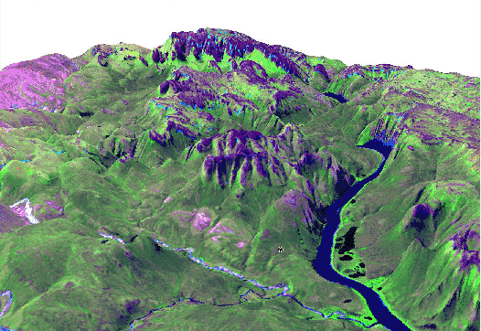
Рис.20. Снимок ЕТМ+, наложенный на трехмерную поверхность, в максимальном качестве рендеринга. Обведены инструменты управления отображением трехмерной модели.
{kind=link}
Дата создания: 07.03.2006
Автор(ы): Игорь Поспелов